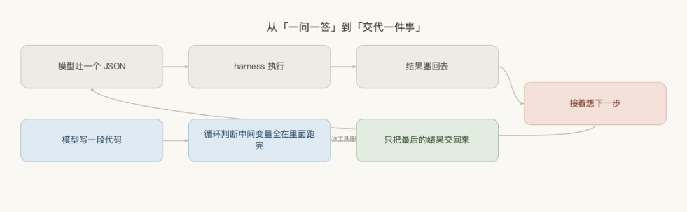
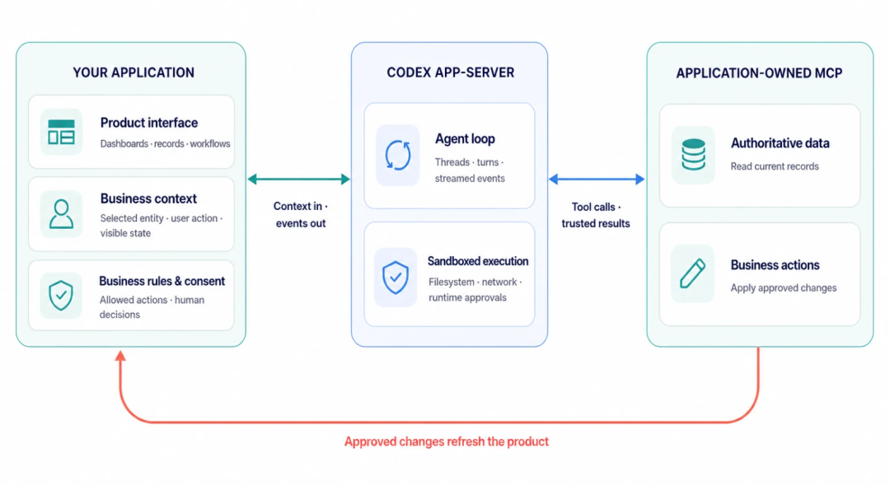
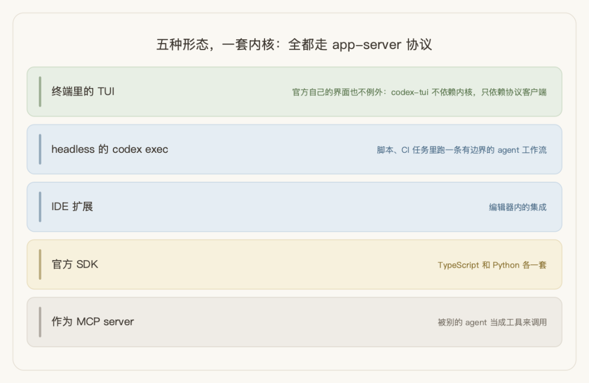
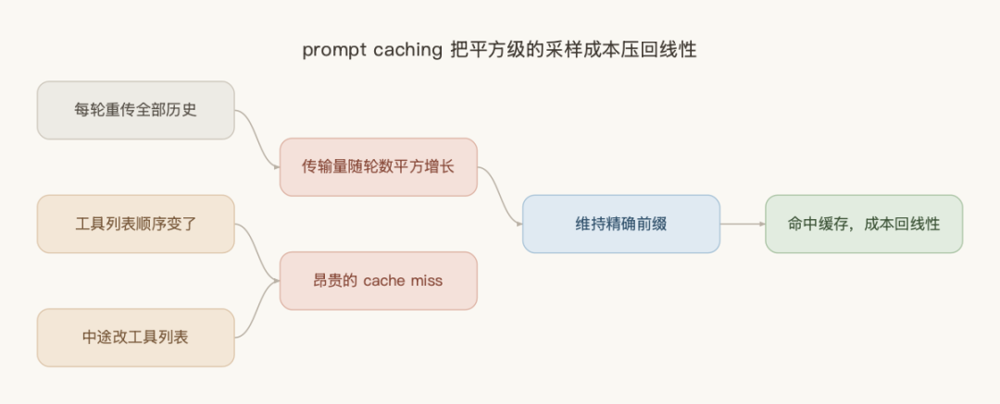
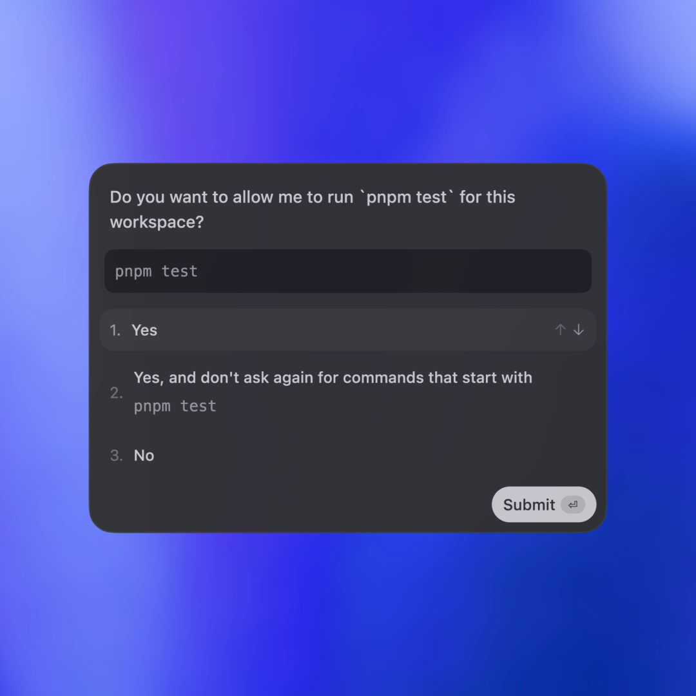
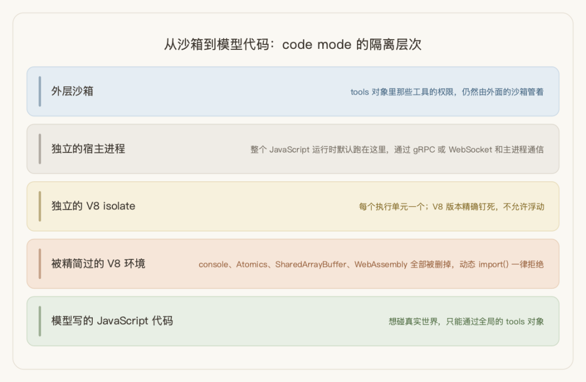

用 Codex 跑最新那几个模型的时候，去看一眼模型手上有哪些工具，会看到一件反直觉的事：只有两个。一个叫 exec，一个叫 wait。
不是功能被砍了。读文件、执行命令、打补丁、搜索代码这些工具全都在，只是它们不再直接摆在模型面前——它们被收进了一个 JavaScript 运行时里。模型想用哪个，就写一段代码去调：
const files =await tools.exec_command({ cmd:"ls src/" }); for (const f of files.split("\n")) { if (f.endsWith(".rs")) await tools.read_file({ path:`src/${f}` }); } 这一步跨得比看上去大。过去模型每想用一次工具，就得停下来吐一个 JSON，等 harness 执行完把结果塞回去，再接着想下一步。现在它直接写一小段程序，循环、判断、中间变量全在里面跑完，只把最后的结果交回来。从「一问一答」变成了「交代一件事」。

这篇就拆一下 Codex 这套 harness 内部到底装了什么：循环里每一步在做什么，以及为什么那么做。
一、harness 到底指什么
这个词最近一年多突然到处都是，但很少有人给它一个能站住的定义。OpenAI 在官方博客里给了一个，我觉得是目前最准确的：
"A capable agent is more than a prompt and a model response. It needs a way to understand a task, maintain context over time, inspect relevant information, call tools, expose progress, handle failures, request human approval when necessary, and return a useful result."
"That surrounding execution system is the harness."
一个能干活的 agent 不只是一个 prompt 加一次模型响应。它需要一套东西来理解任务、在多轮之间把上下文维持住、检视相关信息、调用工具、把进展显示出来、处理失败、必要时请求人工审批，并返回一个有用的结果。
这套包在外面的执行系统就是 harness。
关键在最后那句的 "surrounding"——harness 不是模型的一部分，是包在模型外面的那一层。模型负责想，harness 负责让"想"变成"做完"。
OpenAI 自己画的架构图把边界划得很清楚：

中间那一栏写的是 app-server，那就是 harness 的落地形态。它里面只有两个盒子：Agent loop 和 Sandboxed execution。左边是你的应用（界面、业务 context、授权规则），右边是你的数据和动作。
这张图值得多看两眼的地方在于它把什么排除在 harness 之外了。业务规则不在里面，界面不在里面，数据也不在里面。harness 只管两件事：把循环转起来，以及让循环里发生的事情待在边界内。
二、一个协议撑起五种形态
Codex 现在有五种用法：终端里的 TUI、headless 的 codex exec、IDE 扩展、官方 SDK（TypeScript 和 Python 各一套），以及作为 MCP server 被别的 agent 调用。五种形态，一套内核。
它是怎么做到的？我翻源码时看到一个细节，比任何架构文档都说明问题：官方那个终端界面，并不依赖 agent 内核。
codex-tui 这个 crate 的依赖列表里没有 codex-core。它只依赖一个叫 app-server-client 的东西——也就是说，官方自己的 TUI 和任何第三方集成，走的是同一条路：一套 JSON-RPC 协议，155 个客户端请求，77 个服务端通知。

这条纪律带来的好处是，界面和引擎之间不可能出现"抄近路"。官方文档里那句话说得很直白：
"The UI is external to
Codex, asCodexis intended to be operated by arbitrary UI implementations."UI 对
Codex而言是外部的，因为Codex本就被设计成可以由任意 UI 实现来驱动。
有意思的是，这套协议一开始并不是规划出来的。官方在讲 App Server 由来的那篇里，自己承认了：
"Initially, the App Server was a practical way to reuse the Codex harness across products that gradually evolved into our standard protocol... At the time, we didn't expect other clients to depend on the App Server, so it wasn't designed as a stable API."
最初，App Server 只是一个在多个产品间复用 Codex harness 的实用做法，后来才逐步演化成我们的标准协议……当时我们没预期会有其他客户端依赖 App Server，所以它并没有被设计成一个稳定 API。
一个为了不重写 VS Code 扩展而搭的临时方案，最后变成了整个产品的地基。这种事在工程里其实很常见，值得记的是他们后来的处理方式——没有推倒重来，而是把 v1 协议保留下来做兼容层，让 v2 在旁边长。
协议一旦被第三方依赖，它就不再是你的内部实现了——要么一开始就当公共 API 设计，要么准备好长期维护兼容层。这是做开放平台早就吃过的亏，不是 agent 时代的新问题。只是这一轮很多团队是头一回做给别人集成的东西，老经验反而最容易被丢在门外。
会话这一层的原语也设计得比较克制，thread/fork（从任意一个历史节点分叉出一条新会话）和 turn/steer（模型正在跑的时候插一句引导，但不打断它）这两个尤其值得借鉴。有了 fork，"从刚才那步重试一次，但换个方向"才成立；有了 steer，用户不必在"看着它跑偏"和"打断重来"之间二选一。
三、平方级的循环，靠 prompt caching 压回线性
agent loop 有个结构性问题，OpenAI 在博客里自问自答了：
"You might be asking yourself, 'Wait, isn't the agent loop quadratic in terms of the amount of JSON sent to the Responses API over the course of the conversation?' And you would be right."
你可能会心想：「等等，就整场会话中发往 Responses API 的 JSON 数据量而言，这个 agent loop 不是平方级的吗？」你说得没错。
每一轮都要把之前所有的历史重新发一遍，轮数越多，单轮发送量越大，总传输量随轮数平方增长。
但真正贵的不是网络传输。官方在同一篇里点得很准：采样模型的成本盖过网络流量的成本，所以效率优化的靶子从来是采样，不是带宽。而采样这一侧有办法救——命中缓存的部分不用重算。
解法就是 prompt caching，但要想缓存生效有个硬前提：旧的 prompt 必须恰好是新 prompt 的精确前缀。这不是自然长出来的性质，是刻意维持的——静态内容（系统指令、示例）放最前面，可变内容放最后，图片和工具列表在多次请求之间必须完全一致。

只要这个前缀关系成立，采样成本就从平方级掉回线性。
这条纪律有多脆弱？官方自己举了个真实的 bug：最初支持 MCP 工具时，没有以一致的顺序枚举工具列表，缓存就这么失效了。更棘手的是，MCP server 可以通过 notifications/tools/list_changed 这个通知，在会话进行中随时改变自己提供的工具清单：
"Honoring this notification in the middle of a long conversation can cause an expensive cache miss."
在一场长会话的中途去响应这个通知，会造成一次代价高昂的 cache miss。
我觉得这是自建 agent 系统里最容易踩、又最难发现的一类坑——功能全对，结果全对，只有账单悄悄翻了几倍。没有人会因为"结果是对的"去查缓存命中率。任何允许工具列表动态变化的设计，都得把"改列表等于让缓存无效"这件事算进成本模型里。
还有一个取舍值得说。Responses API 本来提供了 previous_response_id 参数，传一个 ID 就能让服务端接上历史，不用每轮重传。Codex 刻意不用它，理由是保持请求完全 stateless，以及支持 Zero Data Retention（零数据留存）——存储 previous_response_id 所需的数据，本身就和 ZDR 冲突。
代价是每轮重传全量历史，换来的是"服务端不留东西"。这里面有个设计得很巧的细节：选了 ZDR 的客户并不会因此损失跨轮的推理连续性，因为加密后的 reasoning 内容仍可在服务端解密——OpenAI 持久化的是这些客户的解密密钥，而不是他们的数据。
做企业合规的话，这个思路可以直接搬：把"不留数据"和"不留密钥"拆成两件事，能同时满足合规要求和功能连续性。
四、沙箱执行不了策略时，它选择不跑
Codex 默认就在沙箱里跑，不需要用户手动开。三个平台各有各的原生实现，没有一个是"套个容器了事"：
- macOS
：seatbelt（sandbox-exec），策略文件动态生成 - Linux
：把 bubblewrap 的 C 源码 vendored 进来静态编译，配 seccomp - Windows
：原生支持，受限令牌 + DACL（Windows 的文件访问控制表）+ 防火墙过滤 + 私有 desktop
Linux 那条尤其能说明态度：不是调用系统里装的 bubblewrap，而是把它的源码收进仓库自己编译，避免依赖用户机器上装了哪个版本。还有一个叫 codex-shell-escalation 的组件，本质是一个打过补丁的 zsh，hook 住每一次进程创建。
但真正体现设计取舍的是一行错误信息。当某个平台的沙箱后端能力不足以执行请求的策略时，Codex 的选择是：
"windows sandbox backend cannot enforce file_system={...}, network={...}, permission_profile={...}; refusing to run unsandboxed"Windows 沙箱后端无法执行 file_system、network、permission_profile 这几项限制；拒绝在无沙箱状态下运行。
拒绝运行，而不是降级运行。 这就是 fail-closed。
对照着看会更清楚：同类工具里有的默认是 fail-open——沙箱起不来就打个警告，然后照常执行命令，想要 fail-closed 得自己去配置里打开一个开关。这两种默认值的差别，在有人盯着的时候几乎看不出来；在 CI 里、在无人值守的长任务里，差的就是全部。
这里有一条通用规律：做成开关，就意味着大多数人跑在不安全的那个默认值上。

上面这张官方截图里的第二个选项——"同意，且以后不再询问 pnpm test 开头的命令"——就是一个这样的开关。它当然有存在的必要：人工审批在长任务里必然退化，点到第三十次的时候，没有人还在认真看内容。但一旦按下去，这一类命令以后就都不过审批了。
Codex 的处理是在人和开关之间加了一层，叫 Guardian——用一个职责更窄的 reviewer agent 接管这部分判断：
"The reviewer is itself a Codex agent with a narrower job than the main agent: decide whether a specific boundary-crossing action should run."
这个 reviewer 本身也是一个 Codex agent，但它的职责比主 agent 窄得多：判断某一个越界动作该不该执行。
它只在动作要穿越沙箱边界时才触发，沙箱内的常规操作不过它，所以成本可控。判据也不是笼统的"这安全吗"，而是拆成了具体的威胁类别：数据外泄、凭据探测、削弱持久性安全措施、破坏性动作。
最见功力的是拒绝之后给主 agent 的那句指令：
"Do not pursue the same outcome via workaround, indirect execution, or policy circumvention."
不要通过绕道、间接执行或规避策略的方式去达成同一个结果。
这一句堵的是模型"换个方式再试一次"的天然倾向。任何做过 agent 权限控制的人都知道，模型被拒绝之后自己找替代路径，是最难防的行为。
这个思路不是 Codex 独有。Claude Code 的 auto mode 也是一个独立的 classifier 模型在动作跑之前先看一遍，挡掉超出你原本请求范围的、指向没见过的基础设施的、以及看起来是被读到的内容驱使的动作。
有两个细节值得留意：这个 classifier 默认跑在 Sonnet 5 上，不跟随你在 /model 里选的模型，审批的和被审批的不是同一个脑子；另外它拿不到工具返回——用户消息、工具调用、CLAUDE.md 都给它看，唯独 tool results 被剥掉，网页或文件里埋的敌意内容因此没法直接操纵审批这一层。
还有一个我很欣赏的地方：这套沙箱的源码里，开发者自己列出了九条已知的逃逸边界，其中几条是：
沙箱拒绝的判定是基于退出码和错误关键词的启发式，可能误判 DNS rebinding 防不住 证书落盘存在竞态 可写目录内的深层符号链接是故意不解析的 密钥脱敏只是尽力而为的正则，不构成控制手段
在一个安全组件里主动写下"我这里防不住什么"，比宣称"我们是安全的"可信得多。
五、模型手上只剩两个工具了
回到开头那个反差。
模型看到的 exec，并不是一个普通的函数调用工具。它的参数不是 JSON，而是一段原始的 JavaScript 源码。官方给它的工具描述是这么写的：
"Evaluates the provided JavaScript code in a fresh V8 isolate as an async module. All nested tools are available on the global
toolsobject, for exampleawait tools.exec_command(...). Runs raw JavaScript — no Node, no file system, no network access, no console."在一个全新的 V8 isolate 里，把提供的 JavaScript 代码当作 async module 求值。所有嵌套工具都挂在全局的
tools对象上，例如await tools.exec_command(...)。跑的是纯粹的 JavaScript——没有 Node，没有文件系统，没有网络访问，没有 console。
这段描述里的每一个"没有"都是刻意的。模型写的代码跑在一个被精简过的 V8 环境里：console、Atomics、SharedArrayBuffer、WebAssembly 全部被删掉，动态 import() 一律拒绝。想碰真实世界，只能通过 tools 对象——而那些工具的权限，仍然由外面的沙箱管着。

隔离做了两层：每个执行单元一个独立的 V8 isolate，而整个 JavaScript 运行时默认还跑在一个独立的宿主进程里，通过 gRPC 或 WebSocket 和主进程通信。V8 的版本被精确钉死在某一个具体版本上，不允许浮动。
这不是一个实验特性。判断依据是模型目录里的配置：所有当前的前沿模型都被标成了 tool_mode: "code_mode_only"，而这个配置的优先级高于本地的功能开关。也就是说，跑这些模型时，模型看到的工具列表就是只有 exec 和 wait，没有别的选项。
收益在哪？举个具体的场景。假设要在一个有二十个文件的目录里，挑出所有超过 500 行的 Rust 文件，逐个读进来分析。
传统方式下，模型得先列一次目录；再对二十个文件各跑一次行数统计，一次一个来回；筛出其中那五六个，再逐个读进来。加起来接近三十次往返，而且每一次的中间结果——包括那十几个被筛掉的文件名和行数——都要进上下文。
code mode 下这是一段十行的循环，跑完只把最终结果交回来。被筛掉的那些，模型自己在 runtime 里处理完就丢了，一个字都不进上下文。
N 个工具 × M 个步骤，压成了 1 次调用。
上下文膨胀和多步延迟这两件事，其实是同一个根因长出来的——每一步都要经过模型。code mode 一次把它们都摘掉了。工具越多、调用链越长，收益越大。
代价也很清楚，而且不小：可观测性要重做。过去排查一次 agent 行为，读的是一串结构化的工具调用记录，每一步的输入输出都在。现在读的是模型写的一段代码加上运行时状态——出了问题，你得先看懂它写了什么，再判断它为什么这么写。原来那套"看日志找哪一步错了"的排查方式，在这里不成立。
对应地，Codex 在这一层加了不少预算控制：单次执行的让出时间（跑到这个点就先把控制权交回来）、单次调用的最大输出 token 数、中断时终止活跃执行单元的机制。这些都是在为"模型写的代码可能不受控"做兜底。
最后：哪几条可以借鉴到自己的系统里
这套 harness 里，跟"用哪家模型"完全正交的部分，恰恰是自建方案最容易漏掉的。挑三条最实用的：
权限求交集，永远不放宽。 子 agent 的权限必须是父 agent 权限的子集，而且这件事要在函数层面强制——如果你的实现是"子 agent 启动时读自己的配置"，那已经错了。Codex 的做法是有一个专门的函数做两个权限集合的交集运算，网络权限那部分是纯粹的逻辑与：两边都明确允许才允许，其余情况一律关闭。
把 .git 和配置目录强制设为只读，哪怕它们落在可写区内。 agent 能写 .git/hooks/，就等于能在下一次 commit 时执行任意代码；能写自己的配置目录，就等于能改自己的沙箱规则。这是沙箱自举漏洞，绝大多数自建方案都没堵。Codex 把 .git 的三种形态都覆盖了——普通仓库里它是目录、worktree 和 submodule 里它是一个指向别处的文件、bare repo 又是另一种结构——另外还专门写了测试，防止有人用符号链接把它指到一个假目录上绕过检查。
错误信息是写给模型的 prompt，不是写给日志的。 命令因为沙箱被拒时，把具体挡住的路径或主机名附回失败输出里。Permission denied 对模型毫无用处，它只会换个姿势再试一次；denied write to /Users/x/.ssh/config; writable roots are [/repo] 才能让它知道该请求什么权限、或者干脆换个思路。
这三条实现起来都不难，难的是想到要做。
这一年多，大家默认 agent 就是模型吐一个 JSON、harness 执行、结果塞回去这个循环，所有优化都在这个框架内做：更好的工具描述、更少的工具数量、更聪明的路由。
code mode 直接换掉了这个框架。它赌的是模型写代码的能力已经足够好，好到可以把编排权整个交出去。
如果你手上的 agent 系统已经在为"工具太多塞不下"和"调用链太长太慢"发愁，这条路值得花一个下午认真算一次账：把编排权交给模型能省下多少次往返、多少上下文，够不够抵消将来排查一次线上问题时多花的那些时间。